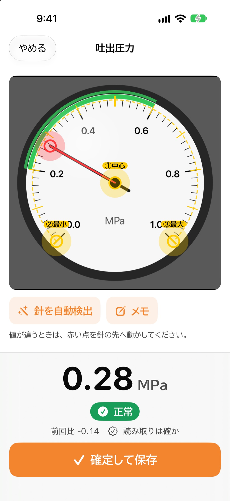
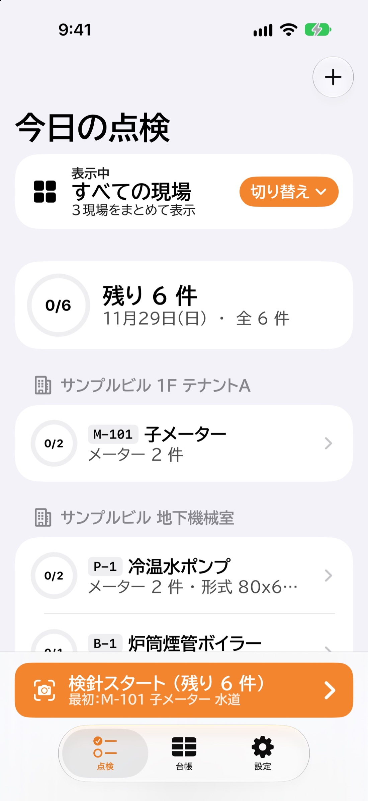
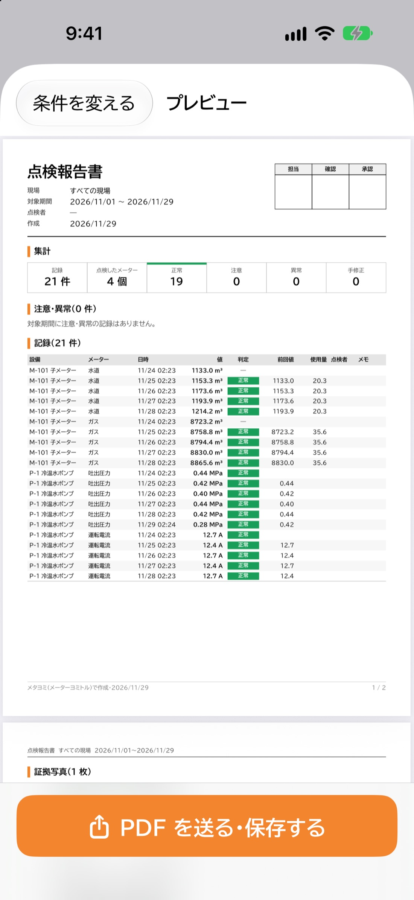
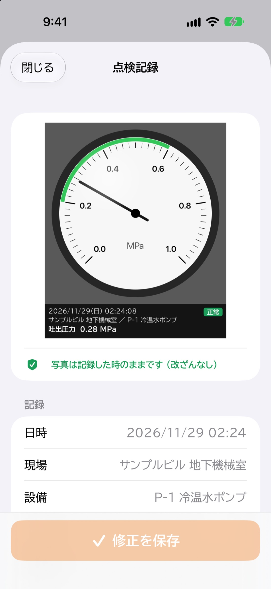
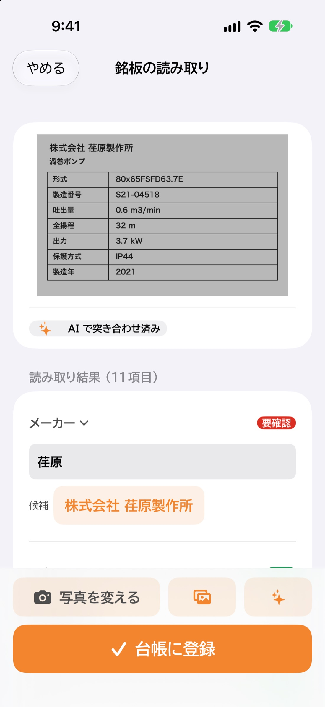
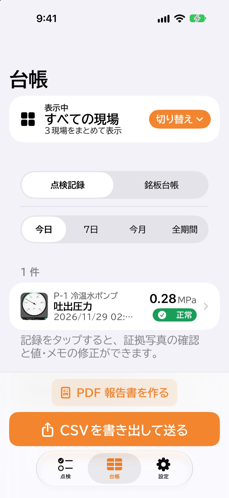

メーターを撮るだけで、
点検台帳に。
点検台帳に。
針メーター・デジタル表示・回転式メーター・設備の銘板を、iPhone のカメラで読み取ります。注意・異常の判定、日時と読取値を焼き込んだ証拠写真、そのまま出せる PDF 報告書まで。写真も記録も、端末の外には出ません。
- クラウド不要・通信なしで読み取り
- 広告なし
- 基本機能は無料

CHALLENGES
検針の記録、こんな手間はありませんか
紙に書いて、事務所で打ち直して、報告書にまとめる。数字を写すたびに、時間と読み違いのリスクが積み重なります。
書き写しと打ち直し
現場で紙に書き、戻ってから表計算に入力。同じ数字を何度も扱うので、時間も転記ミスも増えます。
人によって読み方が違う
針が目盛りの間にあるとき、回転式の数字が送り途中のとき。担当者ごとに読み方がずれます。
記録の裏づけが残らない
「本当にその値だったか」をあとから確かめられない。写真と記録が別々で、報告書づくりも手作業です。
HOW IT WORKS
撮って、確かめて、台帳に。3ステップ
特別な機材は要りません。いつもの iPhone で、点検ルートの順にメーターを撮っていくだけです。

点検ルートに沿って撮る
「検針スタート」で未点検のメーターを順に案内。撮ると自動で読み取り、確定すると次のメーターへ進みます。
確かめて確定する
読み取った値と判定（正常・注意・異常）、前回からの変化を表示。違っていれば、その場で指で直せます。

台帳と報告書に
記録は現場・設備・メーターごとの台帳に。CSV や、写真つきの PDF 報告書として、そのまま提出できます。
FEATURES
現場のメーターに合わせた機能
古いアナログのメーターも、そのままで。メーターを取り替えたり、機器を付け足したりする必要はありません。
針メーター（圧力計・温度計など）
最初の1回だけ中心と目盛りの端を合わせれば、次からは針を自動で見つけて値にします。
デジタル表示（7セグ）
LED・液晶の数字表示を読み取ります。小数点の位置も、メーターごとの設定で取り違えません。
回転式（積算）メーター
水道・ガス・電力量などの回転する数字を読み取り、前回からの使用量を計算。送り途中の数字も規則に沿って読みます。
設備の銘板
形式・製造番号・出力・電圧などを読み取って設備台帳に。品目・単位の付け替えや、読み違いの修正もかんたん。直した内容は次から自動で読みます。
注意・異常の判定
現場ごと・メーターごとに、注意（黄）と異常（赤）の範囲を設定。急な変化も知らせます。記録がたまると範囲の目安を提案します。
証拠になる写真
日時・現場・設備・読取値・判定・点検者を写真に焼き込み。写真の「指紋」を記録し、あとから差し替えられていないか確かめられます。
連続検針
未点検のメーターを順番に案内。保存すると自動で次へ。手袋をしていても押しやすい大きなボタンです。
CSV で台帳を書き出し
Excel でそのまま開ける CSV。区切り・文字コード（Shift_JIS も）・日付の形式・出す列を選べます。
PDF 点検報告書
現場・期間ごとに、集計・注意と異常の一覧・記録表・証拠写真・押印欄をまとめた報告書を作成。
GALLERY
画面
見やすさを優先し、文字はユニバーサルデザインの BIZ UD ゴシック。明るい屋外や、少し離して見ても読みやすくしています。

証拠写真と改ざん確認
記録をタップすると、写真と記録の内容を確認できます。値を直すと理由とともに履歴に残ります。

銘板の読み取り
読みが割れた項目は候補から選ぶだけ。単位はプルダウンで、表記の揺れもそろえます。

現場ごとの台帳
現場を切り替えて、期間ごとに記録を一覧。CSV・PDF はファイル名に現場名が入ります。
USE CASES
こんな現場で
メーターを巡回して記録している現場なら、業種を問わず使えます。
ビルメンテナンス
機械室の圧力計・温度計、受水槽や空調機の計器を、巡回しながら記録。月次の報告書づくりまで。
工場の設備保全
ポンプ・コンプレッサー・ボイラーの日常点検。注意・異常の判定で、変化に早く気づけます。
子メーターの検針
テナントの水道・ガス・電力量の子メーター。前回値からの使用量を自動で計算します。
設備台帳の整備
銘板を撮って、形式・製造番号・出力などを台帳に。更新計画や部品手配の下調べに。
DATA & SECURITY
現場の写真を、外に出さない
機械室や工場の写真は、社外に出したくない情報です。メーターヨミトルは読み取りをすべて端末の中で行い、記録も端末にだけ保存します。クラウドの AI は使いません。
通信なしで読み取る
数字の読み取り・判定・報告書づくりは、すべて iPhone の中。電波の届かない地下の機械室でも使えます。
記録は端末の中だけ
写真・記録・設備の情報は端末に保存。私たちのサーバーに送ることはありません。
送るのは選んだときだけ
CSV・PDF・写真が外に出るのは、あなたが「送る・保存する」を選んだときだけです。
広告・解析ツールなし
広告も、利用状況を集める解析ツールも、トラッキングもありません。
PRICING
料金
読み取り・判定・証拠写真・CSV は、無料でずっと使えます。現場の規模が大きくなったら、報告書づくりまで Pro で。
無料
0円
まず試したい方・小さな現場に
- メーターの登録は10個まで
- 針・デジタル・回転式・銘板の読み取り
- 注意・異常の判定
- 証拠写真と改ざん確認
- CSV の書き出し
- PDF 報告書（「無料版」の透かし入り）
Pro 年額プラン
9,800円／年
最初の1週間無料（はじめての方）・2か月分お得
- 無料の機能すべて
- メーターの数に上限なし
- PDF 点検報告書（透かしなし）
Pro 月額プラン
980円／月
繁忙期だけ使いたい方に
- 年額プランと同じ機能
- いつでも解約できます
法人でのご利用
複数の現場・複数台での利用、業務に合わせた使い方のご相談を受け付けています。現場で試していただける企業さまも募集しています。導入のご相談はこちら
価格は税込です。Pro は App 内課金（自動更新サブスクリプション）で、期間終了の24時間前までに解約しない限り自動で更新されます。詳しくは利用規約をご覧ください。
FAQ
よくある質問
読み取った値は正確ですか？
メーターヨミトルは読み取りを支援するアプリです。読み取った値は画面に大きく表示し、写真と見比べてから「確定」して保存します。読み取りに自信がないときは、その旨を表示します。違っていたら、針の位置や数字をその場で直してください。
どんなメーターに対応していますか？
針で示すアナログのメーター（圧力計・温度計・電流計など）、LED や液晶の数字表示（7セグ）、水道・ガス・電力量などの回転式（積算）メーター、設備の銘板（ネームプレート）です。
対応している端末は？
iOS 18 以降の iPhone です。銘板の読み取りでの AI 照合は、Apple Intelligence に対応した端末（iOS 26 以降）で使えます。
インターネットにつながっていなくても使えますか？
はい。読み取り・判定・台帳・報告書づくりは、すべて通信なしで動きます。通信を使うのは、App 内課金（Apple）のときだけです。
写真や記録はどこに保存されますか？
すべて端末の中です。私たちのサーバーには送りません。iPhone のバックアップ（iCloud・パソコン）に含まれるので、機種変更のときはバックアップから戻せます。大切な記録は、CSV・PDF でも保管してください。
「改ざん確認」とは何ですか？
記録を保存するとき、写真ファイルの「指紋」（SHA-256）を一緒に記録します。あとで記録を開くと、写真がそのときのままかを確かめて表示します。値をあとで直した場合は、写真は撮影時のまま残し、いつ・誰が・何を・なぜ直したかを履歴に残します。
会社でまとめて導入できますか？
現在は、お一人ずつ App Store から入手する形です。チームでの導入や請求書でのお支払いなど、法人向けのご要望はメールでお聞かせください。